Agenda – Hypothesis Testing – Week 2
📌 Quick Navigation
- 1. Hypothesis Testing
- 2. Basic Concepts of Hypothesis Testing
- 3. Performing a Hypothesis Test
- 4. One-Tailed and Two-Tailed Tests
- 5. Confidence Interval and Hypothesis Test
- 6. Some Important Tests
- a. Test for One Mean
- b. Test for Equality of Means
- c. Test for Equality of Means – Equal Std Dev
- d. Test for Equality of Means – Unequal Std Dev
- e. Paired Test for Equality of Means
- f. Test for One Proportion
- g. Test for Two Proportions
- h. Test for One Variance
- i. Test for Equality of Variances
- j. Test of Independence
- k. ANOVA Test
- CSV Download
- References & Further Reading
1. Hypothesis Testing
a. Introduction
- Definition: Hypothesis testing is a statistical method to make decisions using data, often about population parameters.
- Purpose: Helps determine if there is enough evidence to support a specific claim about a population.
What is Hypothesis?
- Often, we are interested in population parameter(s) (such as the mean, proportion, or variance for an entire group).
A hypothesis is a conjecture about the population parameter(s).
For example:
- A bulb manufacturing company wants to know whether a new manufacturing process improves the reliability of the bulbs.
This leads to a hypothesis about the average bulb lifespan or failure rate under the new process.
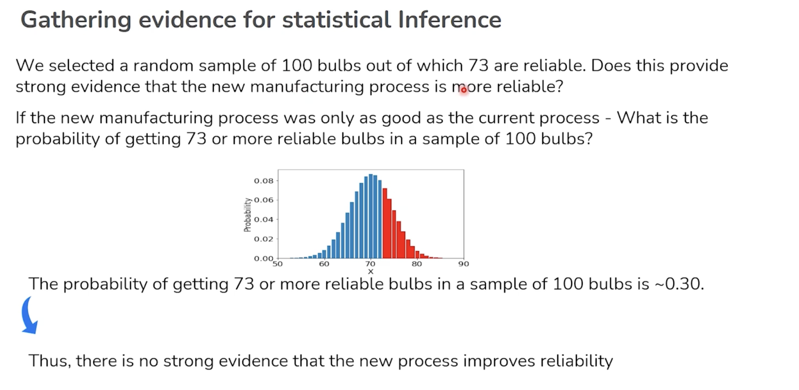 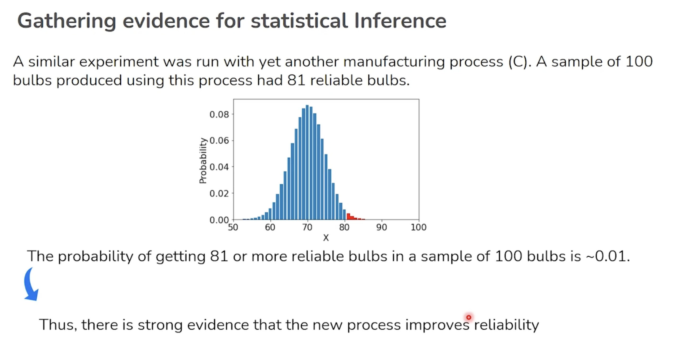
Objective of Hypothesis Testing:
- To set a value (or claim) for the population parameter(s), and
- To perform a statistical test to see whether that value is supported (“tenable”) by the evidence gathered from a sample.
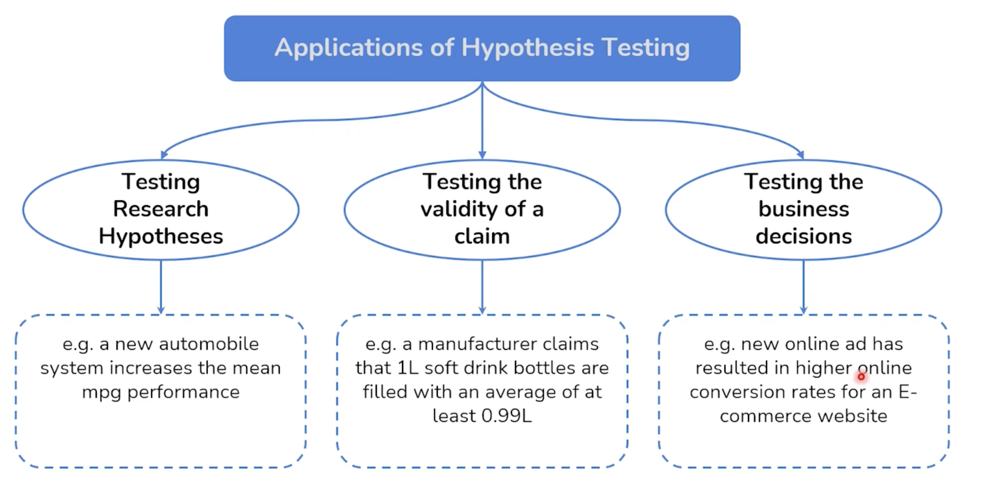
b. Hypothesis Formulation
- Formulating Hypotheses:
- Null Hypothesis (H₀): The default position or status quo (e.g., “no effect,” “no difference”).
- Alternative Hypothesis (H₁ or Ha): What you seek to prove (e.g., “there is an effect,” “there is a difference”).
- Steps:
- Clearly define the research question.
- Translate into statistical hypotheses (H₀ & H₁).
- Select significance level (α, e.g., 0.05).
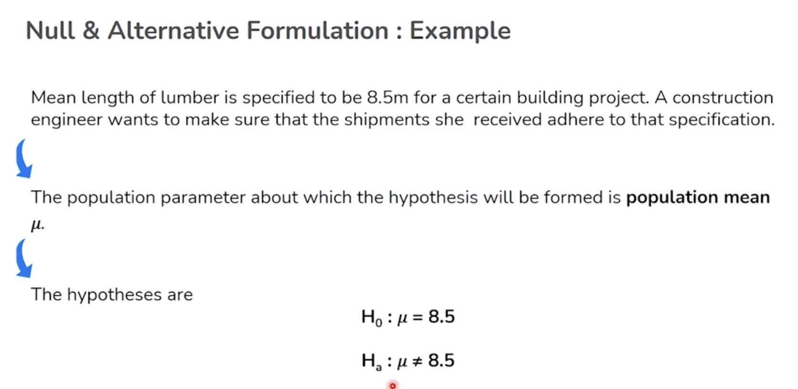
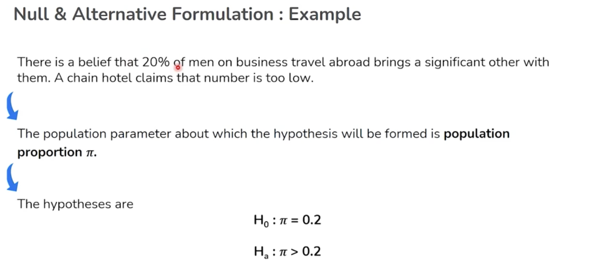
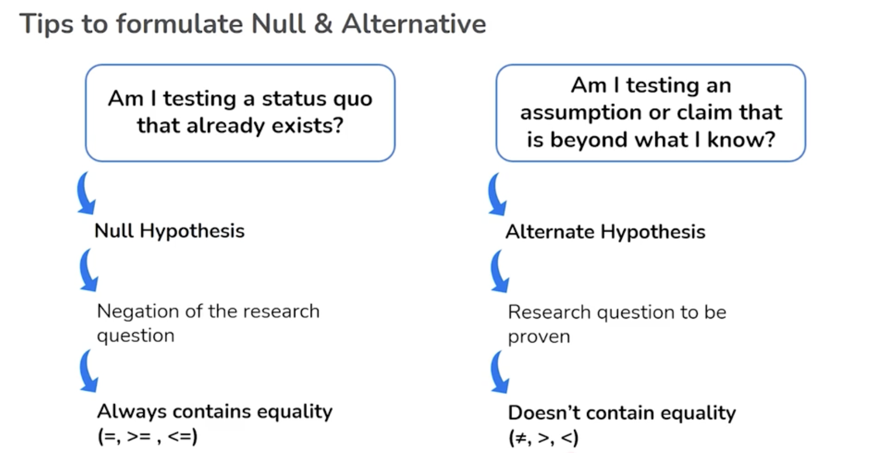
🧪 Open in Colab:
👉 Notebook_Hypothesis_Testing.ipynb

Use Case Example
A pharmaceutical company tests if a new drug lowers blood pressure more than the current standard.
- H₀: New drug is no better than the standard.
- H₁: New drug lowers blood pressure more than the standard.
Why Hypothesis?
Estimation
The problem of estimation is considered when there is no previous knowledge of the population parameter. The problem is simpler in this case: - A random sample is taken, - A sample statistic is computed, - An appropriate point and interval estimate is suggested.
Estimation helps us calculate values for unknown parameters, but does not test any assumptions about those parameters.
Hypothesis Testing
Often, the interest is not in the numerical value of the point estimate of the parameter, but in knowing the plausibility of a hypothesis about the population parameter by using sample data. - Estimation alone is not enough to arrive at a conclusion in such cases.
Hypothesis testing allows us to assess whether the data supports a specific claim about a population parameter, beyond just estimating its value.
2. Basic Concepts of Hypothesis Testing
a. Importance of Null
- The null hypothesis provides a baseline or default assumption.
- All evidence is measured against H₀.
- Without H₀, statistical significance cannot be determined.
b. Importance of Test Statistic
- The test statistic (e.g., t, z, χ²) is a calculated value that helps determine whether to reject H₀.
- It quantifies how far sample data deviates from what H₀ predicts.
c. Type I and Type II Errors
- Type I Error (α): Incorrectly rejecting H₀ (false positive).
- Type II Error (β): Failing to reject H₀ when it is false (false negative).
Error Table Example
| H₀ True | H₀ False | |
|---|---|---|
| Reject H₀ | Type I | Correct |
| Fail to Reject | Correct | Type II |
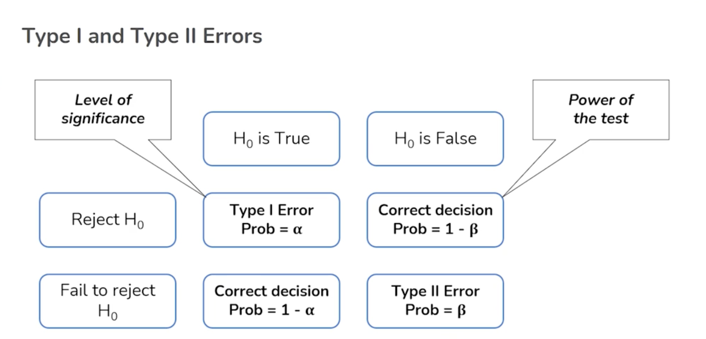
Type I and Type II Errors: Real-World Examples
Example 1: Supermarket Waiting Times
Scenario:
The store manager believes that the average waiting time for customers at checkouts has become worse than 15 minutes.
Hypotheses
| Symbol | Statement |
|---|---|
| H₀ | The average waiting time at checkouts is ≤ 15 min. |
| Hₐ | The average waiting time at checkouts is > 15 min. |
Error Types in Supermarket Example
| Error Type | What It Means | Example Statement |
|---|---|---|
| Type I Error | False Positive | Waiting time is ≤ 15 min, but manager concludes it is > 15 min. |
| Type II Error | False Negative | Waiting time is > 15 min, but manager concludes it is ≤ 15 min. |
-
Type I Error: Rejecting the null hypothesis when it is actually true.
E.g., The waiting time is really ≤ 15 min, but the manager says it’s > 15 min. -
Type II Error: Failing to reject the null hypothesis when it is actually false.
E.g., The waiting time is really > 15 min, but the manager says it’s ≤ 15 min.
Example 2: Cancer Diagnosis
Hypotheses
| Symbol | Statement |
|---|---|
| H₀ | The patient does not have cancer. |
| Hₐ | The patient has cancer. |
Error Types in Medical Example
| Error Type | What It Means | Example Statement |
|---|---|---|
| Type I Error | False Positive | Patient doesn't have cancer, but the doctor says she does. |
| Type II Error | False Negative | Patient does have cancer, but the report says she doesn't. |
-
Type I Error: Diagnosing cancer when the patient actually does not have cancer.
(False positive) -
Type II Error: Failing to diagnose cancer when the patient actually does have cancer.
(False negative)
Side-by-Side Summary Table
| Error Type | Supermarket Example | Medical Example |
|---|---|---|
| Type I Error | Manager wrongly thinks waiting > 15 min | Doctor wrongly says patient has cancer |
| Type II Error | Manager wrongly thinks waiting ≤ 15 min | Doctor/report wrongly says patient has no cancer |
Summary:
- Type I Error: False alarm (detecting an effect that isn't there)
- Type II Error: Missed detection (failing to detect an effect that is there)
d. Hypothesis Testing Template
Standard Steps:
- State H₀ and H₁.
- Choose significance level (α).
- Select appropriate test statistic.
- Determine critical region or compute p-value.
- Make a statistical decision.
Hypothesis Testing Template
| Step | Action | Description |
|---|---|---|
| 1 | Identify the key question | What is the research question that you are trying to answer? |
| 2 | Establish the hypotheses | What is the metric of interest? Define the Null and Alternate Hypothesis. |
| 3 | Understand and prepare data | What data do you have? Do you understand what it means? Can it be used directly? |
| 4 | Identify the right test | Choose the method for testing based on the previous steps. |
| 5 | Check the assumptions | Ensure that data satisfies the assumption for the test. |
| 6 | Perform the test | Get to conclusion based on the results (p-value). |
Summary Checklist
-
Identify the key question:
What are you trying to answer? -
Establish the hypotheses:
Define the metric and state H₀ and Hₐ. -
Understand and prepare data:
Ensure you have the right data and understand its meaning. -
Identify the right test:
Select the appropriate statistical test. -
Check the assumptions:
Make sure assumptions of the test are met. -
Perform the test:
Draw a conclusion from your results (such as the p-value).
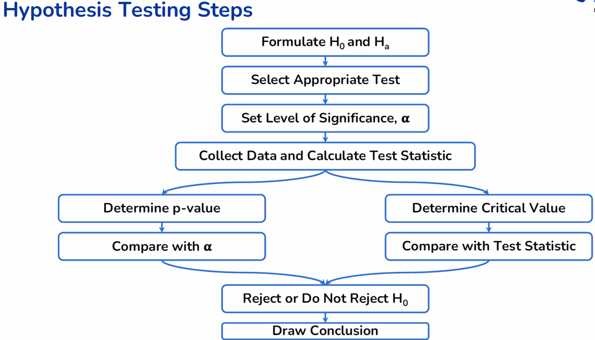
🧪 Open in Colab:
👉 Notebook_Hypothesis_Testing.ipynb

Use Case Example
A factory tests if the mean diameter of produced bolts is 10 mm.
- H₀: Mean = 10 mm
- Use t-statistic to measure sample deviation from 10 mm.
3. Performing a Hypothesis Test
a. Some Key Ideas
- Define your question & hypotheses.
- Choose an appropriate statistical test for your data.
- Understand the implications of test results.
b. Assumptions
- Every statistical test has underlying assumptions (normality, equal variances, random sampling).
- If assumptions are violated, results may not be valid.
c. Critical Point
- The value that defines the threshold for rejecting H₀.
- E.g., for α = 0.05 in a z-test, critical values are ±1.96.
d. Rejection Region Approach
- Identify areas under the probability curve (tails) where H₀ is rejected.
- If test statistic falls in this region, reject H₀.
e. p-value Approach
- The p-value is the probability of obtaining test results at least as extreme as the observed, assuming H₀ is true.
- If p < α, reject H₀.
🧪 Open in Colab:
👉 Notebook_Hypothesis_Testing.ipynb

Use Case Example
A marketing analyst tests if a new ad campaign changes sales figures.
- Assumptions: data are independent, normal.
- The critical region and p-value determine the outcome.
Summary
Key Concepts in Hypothesis Testing
| Concept | Explanation |
|---|---|
| Level of Significance (α) | - Probability of rejecting the null hypothesis when it is true. - Fixed before the hypothesis test. |
| p-value | - Probability of observing a test statistic (or more extreme) under the null hypothesis. - Depends on sample data. Alpha (α) is pre-fixed but p-value depends on the value of the test statistic. |
| Acceptance or Rejection Region | - The area under the distribution curve is partitioned into acceptance and rejection regions. - Reject the null hypothesis if the test statistic falls in the rejection region; otherwise, fail to reject it. |
Let's Start Simple
Consider the following questions in hypothesis testing:
| Question | Question |
|---|---|
| What are the null and alternative hypotheses? | What is an appropriate test statistic? |
| What is preset level of significance? | How to check whether the data is giving significant evidence against the null hypothesis or not? |
Let's see an example and understand the significance of the above questions.
For simplicity, we will assume that the population standard deviation is known and the sample size is more than 30.
Example
It is known from experience that for a certain E-commerce company, the mean delivery time of the products is 5 days with a standard deviation of 1.3 days.
The new customer service manager of the company is afraid that the company is slipping and collects a random sample of 45 orders. The mean delivery time of these samples comes out to be 5.25 days.
Is there enough statistical evidence for the manager’s apprehension that the mean delivery time of products is greater than 5 days?
Note:
This is clearly a one-tailed test, concerning population mean μ—the mean delivery time of products.
First test - Z-test for One Mean
| Significance of the test | Assumptions | Test Statistic Distribution |
|---|---|---|
| Test for population mean \(H_0: \mu = \mu_0\) |
- Continuous data - Normally distributed population or sample size \(> 30\) - Known population standard deviation \(\sigma\) - Random sampling from the population |
Standard Normal distribution |
🧪 Open in Colab:
👉 Notebook_Hypothesis_Testing.ipynb

4. One-Tailed and Two-Tailed Tests
- One-Tailed Test: Tests for deviation in one direction only (e.g., “greater than” or “less than”).
- Two-Tailed Test: Tests for deviation in both directions (e.g., “not equal to”).
When to use: - Use one-tailed if you only care about increase/decrease. - Use two-tailed if you care about any change.
🧪 Open in Colab:
👉 Notebook_Hypothesis_Testing.ipynb

Use Case Example
A teacher tests if a new teaching method improves scores (one-tailed), or if it changes scores in either direction (two-tailed).
Alternative Hypothesis Types
| Test Type | Description | Mathematical Form |
|---|---|---|
| One-tailed test | Greater than type | \(H_a: \mu > \mu_0\) |
| Less than type | \(H_a: \mu < \mu_0\) | |
| Two-tailed test | Not equal type | \(H_a: \mu \neq \mu_0\) |
Flow Summary
- Alternative Hypothesis
- One-tailed test
- Greater than type: \(H_a: \mu > \mu_0\)
- Less than type: \(H_a: \mu < \mu_0\)
- Two-tailed test
- Not equal type: \(H_a: \mu \neq \mu_0\)
- One-tailed test
Tip:
- Use one-tailed tests for directional hypotheses ("greater than" or "less than"). - Use a two-tailed test when testing for any difference (not direction).
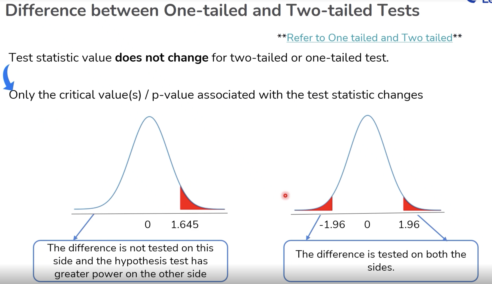
5. Confidence Interval and Hypothesis Test
- Confidence Interval (CI): A range within which a population parameter is expected to fall, with a certain confidence level (e.g., 95%).
- Relationship to Hypothesis Testing:
- If a CI for mean difference excludes 0, H₀ (“no difference”) is rejected at the equivalent significance level.
Confidence Interval vs Hypothesis Testing
Suppose we calculate the \((100 - 5)\%\) confidence interval for the mean.
We also conduct the Z-test for the mean with a 5% significance level.
The hypotheses of the Z-test are:
Is there any relationship between the estimated confidence interval and the hypothesis test?
The confidence interval contains all values of \(\mu_0\) for which the null hypothesis will not be rejected.
Key Points: - If the hypothesized value (\(\mu_0\)) falls within the confidence interval, we do not reject the null hypothesis at the given significance level. - If \(\mu_0\) is outside the confidence interval, we reject the null hypothesis.
🧪 Open in Colab:
👉 Notebook_Hypothesis_Testing.ipynb

Use Case Example
A clinical study reports the CI for treatment effect does not include zero, supporting the alternative hypothesis.
6. Some Important Tests
Hypothesis Testing Frameworks
Choice of test depends on test statistic and data availability
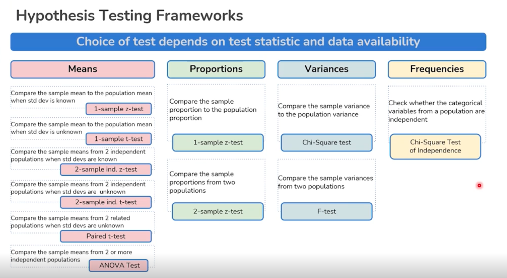
a. Test for One Mean
What: Tests if the mean of a sample differs from a known or hypothesized population mean (one-sample t-test).
Example Hypotheses: - H₀: μ = μ₀ (The sample mean equals the population mean) - H₁: μ ≠ μ₀ (The sample mean does not equal the population mean)
Sample Use Case:
A coffee chain wants to check if the average amount of coffee in its “12oz” cup differs from 12 ounces, based on a random sample of cups.
📊 Hypothesis Testing Example: ZYX Food Delivery Claim
📝 Scenario
A certain food aggregator ZYX is facing stiff competition from its main rival SWG during the Corona period. To retain business, ZYX is advertising that:
Within a radius of 5 km from the restaurant where the order is placed, ZYX can still deliver in 40 minutes or less on average, regardless of changed conditions.
📦 Data Collection
- Delivery times in minutes of 25 randomly selected deliveries are provided in a CSV file.
❓ Problem Statement
Assuming the delivery time distribution is approximately normal, is there enough statistical evidence to reject ZYX’s claim?
🔍 Hypothesis Framing
This is a one-tailed hypothesis test concerning the population mean \( \mu \) — the average delivery time.
- Null Hypothesis (\( H_0 \)): \( \mu \leq 40 \)
- Alternative Hypothesis (\( H_a \)): \( \mu > 40 \)
Claiming that ZYX cannot deliver in 40 minutes or less, on average.
## 🧪 Test Overview Table
| Significance of the Test | Assumptions | Test Statistic Distribution |
|---|---|---|
| Test for population mean \(H_0: \mu = \mu_0\) | - Continuous data - Normally distributed population and sample size < 30 - Unknown population standard deviation - Random sampling from the population |
t distribution (The test is also known as One-sample t-test) |
🎯 Goal
Determine whether ZYX's claim is statistically valid using hypothesis testing methods (e.g., one-sample t-test), based on the sample of 25 deliveries.
🧪 Open in Colab:
👉 Notebook_Hypothesis_Testing.ipynb

b. Test for Equality of Means
What: Tests if the means from two independent samples are equal (independent two-sample t-test).
Example Hypotheses: - H₀: μ₁ = μ₂ - H₁: μ₁ ≠ μ₂
Sample Use Case:
A medical researcher wants to know if two different blood pressure drugs have different average effects.
Example
To compare customer satisfaction levels of two competing media channels, 150 customers of Channel 1 and 300 customers of Channel 2 were randomly selected and were asked to rate their channels on a scale of 1–5, with 1 being least satisfied and 5 most satisfied.
(The survey results are summarized in a CSV file.)
Test at 0.05 level of significance whether the data provide sufficient evidence to conclude that Channel 1 has a higher mean satisfaction rating than Channel 2.
💡 This is a two-sample problem where Channel 1 and Channel 2 populations are independent. Further, this is a one-tailed hypothesis problem, concerning population means \(\mu_1\) and \(\mu_2\), the mean customer satisfaction for Channel 1 and Channel 2 respectively.
Test for Equality of Means – Known Std Devs
| Significance of the Test | Assumptions | Test Statistic Distribution |
|---|---|---|
| Test for equality of two population means \(H_0 : \mu_1 = \mu_2\) |
- Continuous data - Normally distributed population or sample size > 30 - Independent populations - Known population standard deviations \(\sigma_1\) and \(\sigma_2\) - Random sampling from the population |
Standard Normal distribution (The test is also known as Two independent sample z-test) |
🧪 Open in Colab:
👉 Notebook_Hypothesis_Testing.ipynb

c. Test for Equality of Means – Equal Std Dev
What: Special case of two-sample t-test where population standard deviations are assumed equal.
Example Hypotheses: - H₀: μ₁ = μ₂, σ₁² = σ₂² - H₁: μ₁ ≠ μ₂
Sample Use Case:
Comparing average test scores between two classes, assuming the spread of scores (variance) is the same for both groups.
Example: Comparing Daily Media Usage
In the lockdown period, because of working from home and increased screen time, many opted for listening to FM Radio for entertainment rather than watching Cable TV.
An advertisement agency randomly collected daily usage time data (in minutes) from both types of users and stored it in a CSV file.
Question:
Assuming daily Radio and TV usage time are normally distributed, do we have enough evidence to conclude that there is any difference between daily TV and Radio usage time at a 0.05 significance level?
Statistical Framing:
- Type of Test: Two-sample independent test (comparing means)
- Null Hypothesis (\(H_0\)): \(\mu_{\text{TV}} = \mu_{\text{Radio}}\)
(No difference in mean usage time) - Alternative Hypothesis (\(H_a\)): \(\mu_{\text{TV}} \ne \mu_{\text{Radio}}\)
(There is a significant difference in mean usage time) - Significance Level: \(\alpha = 0.05\)
- Assumptions:
- Normal distribution of usage times
- Independent samples
- Continuous data
Test for Equality of Means: Equal Standard Deviations
| Significance of the Test | Assumptions | Test Statistic Distribution |
|---|---|---|
| Test for equality of two population means \(H_0\): \(\mu_1 = \mu_2\) |
- Continuous data - Normally distributed populations - Independent populations - Equal population standard deviations - Random sampling from the population |
t distribution (The test is also known as Two independent sample t-test ) |
| #### 🧪 Open in Colab: | ||
| 👉 Notebook_Hypothesis_Testing.ipynb | ||
d. Test for Equality of Means – Unequal Std Dev
What: Two-sample t-test without assuming equal variances (Welch’s t-test).
Example Hypotheses: - H₀: μ₁ = μ₂ - H₁: μ₁ ≠ μ₂
Sample Use Case:
A tech company compares the mean time to resolve tickets for two support teams with different levels of experience (variances likely differ).
Example
SAT verbal scores of two groups of students are given in a CSV file. The first group, College, contains scores of students whose parents have at least a bachelor’s degree, and the second group, High School, contains scores of students whose parents do not have any college degree.
The Education Department is interested to know whether the sample data support the theory that students show a higher population mean verbal score on SAT if their parents attain a higher level of education.
Assuming SAT verbal scores for two populations are normally distributed, do we have enough statistical evidence for this at a 5% significance level?
This is a two-sample problem as the College and High School populations are different. Further, this is a one-tailed hypothesis problem, concerning population means μ₁ and μ₂, the mean verbal score on SAT for College and High School groups.
Test for Equality of Means: Unequal Std Devs
| Significance of the Test | Assumptions | Test Statistic Distribution |
|---|---|---|
| Test for equality of two population means H₀: μ₁ = μ₂ |
- Continuous data - Normally distributed populations - Independent populations - Unequal population standard deviations - Random sampling from the population |
t distribution (The test is also known as Two independent sample t-test) |
🧪 Open in Colab:
👉 Notebook_Hypothesis_Testing.ipynb

e. Paired Test for Equality of Means
What: Compares means from the same group at different times (paired t-test).
Example Hypotheses: - H₀: μ_before = μ_after - H₁: μ_before ≠ μ_after
Sample Use Case:
A gym measures client weights before and after a 12-week program to see if the mean weight has changed.
Example: Paired Test for Equality of Means
Typical prices of single-family homes in Florida are given for a sample of 15 metropolitan areas (in 1000 USD) for 2002 and 2003 in a CSV file.
Assuming the house prices are normally distributed, do we have enough statistical evidence to say that there is an increase in the house price in one year at a 0.05 significance level?
This is a paired sample problem as the two observations (for 2002 and 2003) are taken on one sampled unit (a metropolitan area). Further, this is a one-tailed hypothesis problem, concerning population means μ₁ and μ₂, the mean house price in 2002 and 2003 respectively.
Paired Test for Equality of Means
| Significance of the Test | Assumptions | Test Statistic Distribution |
|---|---|---|
| Test for equality of two population means H₀: μ₁ = μ₂ |
- Continuous data - Normally distributed populations - Independent observations - Random sampling from the population |
t distribution (The test is also known as Paired t-test) |
🧪 Open in Colab:
👉 Notebook_Hypothesis_Testing.ipynb

f. Test for One Proportion
What: Tests if a sample proportion equals a hypothesized value (one-sample z-test for proportions).
Example Hypotheses: - H₀: p = p₀ - H₁: p ≠ p₀
Sample Use Case:
A poll finds that 58% of voters favor a candidate. Is this significantly different from a hypothesized 50%?
Example: Test for One Proportion
A researcher claims that Democratic party will win in the next United States Presidential election.
To test her belief the researcher randomly surveyed 90 people and 24 out of them said that they voted for Democratic party.
Is there enough evidence at \(\alpha = 0.05\) to support this claim?
This is clearly a one-tailed test, concerning population proportion p, the proportion of people voted from Democratic party.
Test for One Proportion
| Significance of the Test | Assumptions | Test Statistic Distribution |
|---|---|---|
| Test for population proportion H₀: p = p₀ |
- Binomially distributed population - Random sampling from the population - When both mean (np) and n(1-p) are greater than or equal to 10, the binomial distribution can be approximated by a normal distribution |
Standard Normal distribution (The test is also known as One proportion z-test) |
🧪 Open in Colab:
👉 Notebook_Hypothesis_Testing.ipynb

g. Test for Two Proportions
What: Tests if two sample proportions are equal.
Example Hypotheses: - H₀: p₁ = p₂ - H₁: p₁ ≠ p₂
Sample Use Case:
A vaccine trial compares the proportion of people who became ill in vaccine and placebo groups.
Example: Test for Two Proportions
A car manufacturer aims to improve its products’ quality by reducing the defects. So, the manufacturer randomly checks the efficiency of two assembly lines in the shop floor. In line 1, there are 20 defects out of 200 samples and in line 2, there are 25 defects out of 400 samples.
At 5% level of significance, do we have enough statistical evidence to conclude that the two assembly procedures are different?
This is clearly a two-tailed test, concerning two population proportion p₁ and p₂, the proportion of defects in assembly line 1 and assembly line 2 respectively.
Test for Two Proportions
| Significance of the Test | Assumptions | Test Statistic Distribution |
|---|---|---|
| Test for equality of two population proportions H₀: p₁ = p₂ |
- Binomially distributed populations - Independent populations - Random sampling from the populations - When both mean (np) and n(1-p) are greater than or equal to 10, the binomial distribution can be approximated by a normal distribution |
Standard Normal distribution (The test is also known as Two proportions z-test) |
🧪 Open in Colab:
👉 Notebook_Hypothesis_Testing.ipynb

h. Test for One Variance
What: Tests if a sample variance equals a specified value (chi-squared test).
Example Hypotheses: - H₀: σ² = σ₀² - H₁: σ² ≠ σ₀²
Sample Use Case:
A manufacturer checks if the variability in machine part diameters is within the required tolerance.
Test for Variance
Variance tests are used for a comparison of variability, often as a predecessor for other tests.
Let us take many samples of the same size from a normal population and find the sample variances.
They follow a chi-square (\(\chi^2\)) distribution, which is dependent on the degrees of freedom.
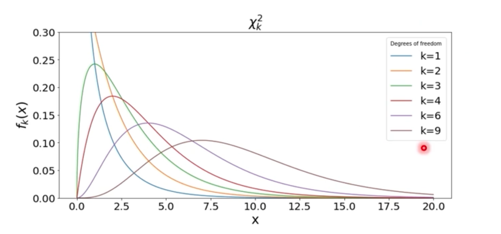
Example: Test for One Variance
It is conjectured that the standard deviation for the annual return of mid cap mutual funds is 22.4%, when all such funds are considered and over a long period of time. The sample standard deviation of a certain mid cap mutual fund based on a random sample of size 32 is observed to be 26.4%.
Do we have enough evidence to claim that the standard deviation of the chosen mutual fund is greater than the conjectured standard deviation for mid cap mutual funds at 0.05 level of significance?
This is clearly a one-tailed test, concerning population variance, the variance for mid cap mutual funds.
Test for One Variance
| Significance of the Test | Assumptions | Test Statistic Distribution |
|---|---|---|
| Test for population variance H₀: σ² = σ₀² |
- Continuous data - Normally distributed population - Random sampling from the population |
Chi Square distribution (The test is also known as Chi-square test for variance) |
🧪 Open in Colab:
👉 Notebook_Hypothesis_Testing.ipynb

i. Test for Equality of Variances
What: Tests if two (or more) population variances are equal (F-test, Levene’s test).
Example Hypotheses: - H₀: σ₁² = σ₂² - H₁: σ₁² ≠ σ₂²
Sample Use Case:
An industrial engineer compares process variability before and after a process improvement.
Example: Test for Equality of Variances
Note: The hypothesis test in the example is a two-tailed test and not a one-tailed test.
The variance of a process is an important quality of the process. A large variance implies that the process needs better control and there is opportunity to improve.
The data (Bags.csv) includes weights for two different sets of bags manufactured from two different machines. It is assumed that the weights for two sets of bags follow normal distribution.
Do we have enough statistical evidence at 5% significance level to conclude that there is a significant difference between the variances of the bag weights for the two machines?
This is clearly a two-tailed test, concerning two population variances, the variance for bag weights from two different machines.
Test for Equality of Variances
| Significance of the Test | Assumptions | Test Statistic Distribution |
|---|---|---|
| Test for equality of two population variances H₀: σ₁² = σ₂² |
- Normally distributed populations - Independent populations - Larger variance should be placed in the numerator |
F distribution (The test is also known as F-test for variances) |
🧪 Open in Colab:
👉 Notebook_Hypothesis_Testing.ipynb

j. Test of Independence
What: Tests if two categorical variables are independent (Chi-squared test of independence).
Example Hypotheses: - H₀: Variables are independent - H₁: Variables are not independent
Sample Use Case:
A health agency checks if smoking status is related to disease occurrence using a contingency table.
Chi-Square Test for Independence
Example 1: Smoking and Gender
A 2x2 contingency table describes two variables (smoking and gender), each at two levels, and stores the number of observations at each cell:
| Male | Female | Total | |
|---|---|---|---|
| Smoker | 120 | 100 | 220 |
| Non-smoker | 60 | 140 | 200 |
| Total | 180 | 240 | 420 |
We are interested to know whether the two variables are independent.
- Null hypothesis (\(H_0\)): Smoking and gender are independent.
- Alternative hypothesis (\(H_a\)): Smoking and gender are not independent.
Example 2: Beverage Preference and Age Group
The following table summarizes beverage preference across different age groups:
| Age | Tea/Coffee | Soft Drink | Others |
|---|---|---|---|
| 21–34 | 25 | 90 | 20 |
| 35–55 | 40 | 35 | 25 |
| > 55 | 24 | 15 | 30 |
Does beverage preference depend on age?
This is a problem of Chi-Square test of independence, concerning the two independent categorical variables, Age and Beverage Preference.
Chi-Square Test for Independence: Key Points
| Significance of the Test | Assumptions | Test Statistic Distribution |
|---|---|---|
| In a contingency table H₀: The row and column variables are independent |
- Categorical variables - Expected value of the number of sample observations in each level of the variable is at least 5 - Random sampling from the population |
Chi Square distribution (The test is also known as Chi-square test of independence) |
🧪 Open in Colab:
👉 Notebook_Hypothesis_Testing.ipynb

k. ANOVA Test
What: Tests if the means of three or more groups are equal (Analysis of Variance).
Example Hypotheses: - H₀: μ₁ = μ₂ = μ₃ = ... = μₖ - H₁: At least one μ differs
Sample Use Case:
A marketing analyst wants to know if average sales differ by region (North, South, East, West).
ANOVA Test: Key Concepts
Important Terms
- Response: Dependent variable which is continuous and assumed to follow a normal distribution.
- Factor: Independent explanatory variable with several levels.
Example:
Comparing the weekly volume of sales by different teams of sales executives.
How ANOVA Works
F-Statistic is the ratio of the between-group variations to within-group variations.
- A large value of F-Statistic indicates more variation between groups than within groups.
- Thus, it will provide evidence against the null hypothesis.
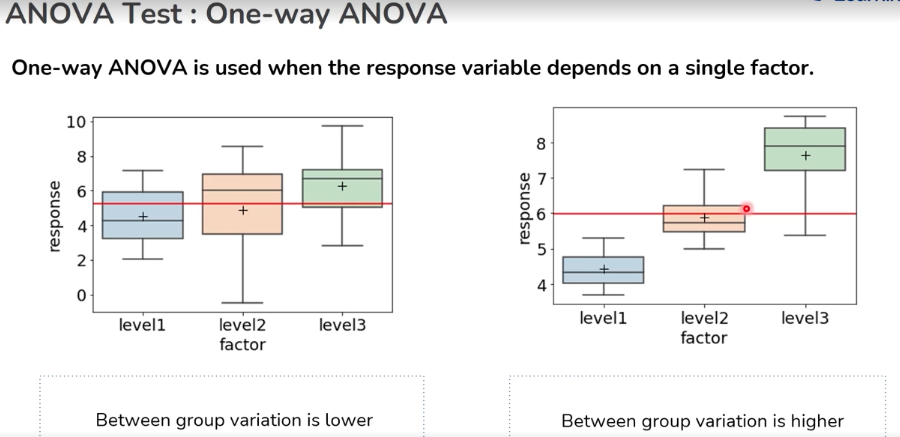
Real-World Example
A traffic management inspector in a city wants to understand whether carbon emissions from different cars are different. The inspector believes fuel type may be an important factor responsible for differences in carbon emission.
- The inspector collects random samples from all registered cars and tests if the amount of carbon emission released depends on fuel type at 5% significance level.
Here, we will compare the means of emission for the three different fuel types.
ANOVA Test: One-way ANOVA
| Significance of the Test | Assumptions | Test Statistic Distribution |
|---|---|---|
| Test for means for more than two populations H₀: All population means are equal |
- The populations are normally distributed - Samples are independent simple random samples - Population variances are equal |
F distribution (The test is also known as One-way ANOVA F-test) |
🧪 Open in Colab:
👉 Notebook_Hypothesis_Testing.ipynb

Each test above should include: - A description - Example hypotheses - A use case (see your original file for inspiration) - Python example (or Colab link, as above)
🧪 Open in Colab:
👉 Notebook_Hypothesis_Testing.ipynb

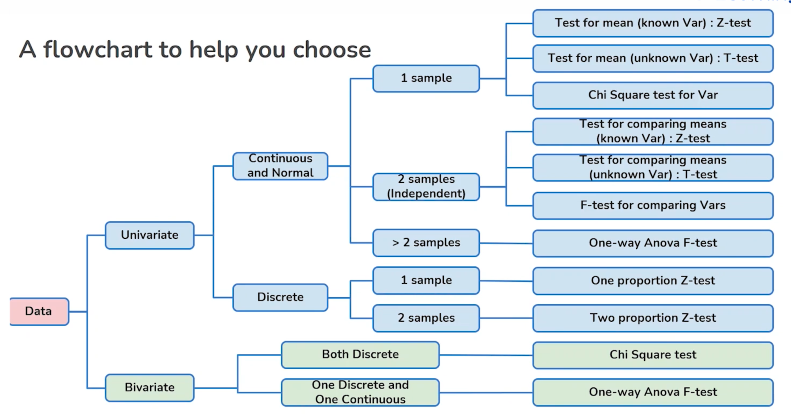
CSV Download
Download real datasets for hands-on practice.
- 👉 Download FastFood1.csv
- 👉 Download AOVData.csv
- 👉 Download Beverage.csv
- 👉 Download Bags1.csv
- 👉 Download Florida.csv
- 👉 Download SATVerbal1.csv
- 👉 Download TVRadio.csv
- 👉 Download rating.csv